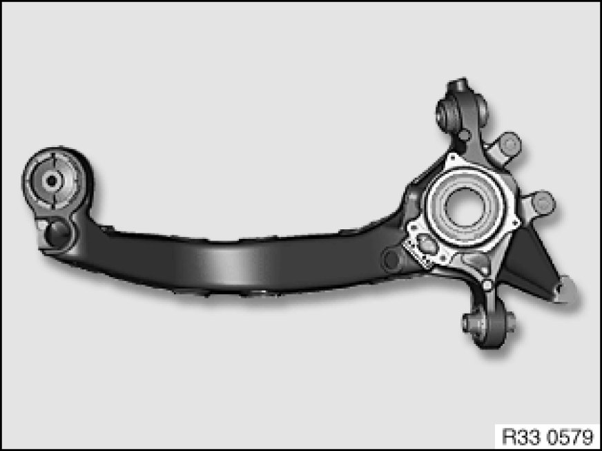

Replacing Left or Right Trailing Arm
33 32 021 - Replacing left or right trailing arm

Necessary preliminary tasks:
- Remove trailing arm Replacing Left or Right Trailing Arm
- Remove brake carrier/brake guard plate Replacing Rear Left (or Right) Brake Carrier/Brake Guard Plate

Installation:
Install new wheel bearing.
Detach wheel bearing inner race from drive flange.
After installation:
- Adjust handbrake Adjustments
- Perform chassis alignment check